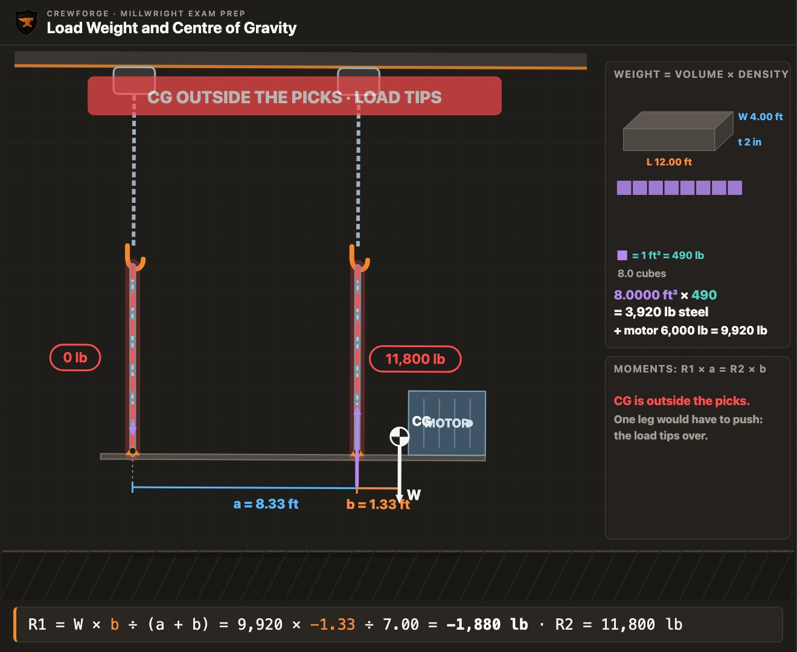
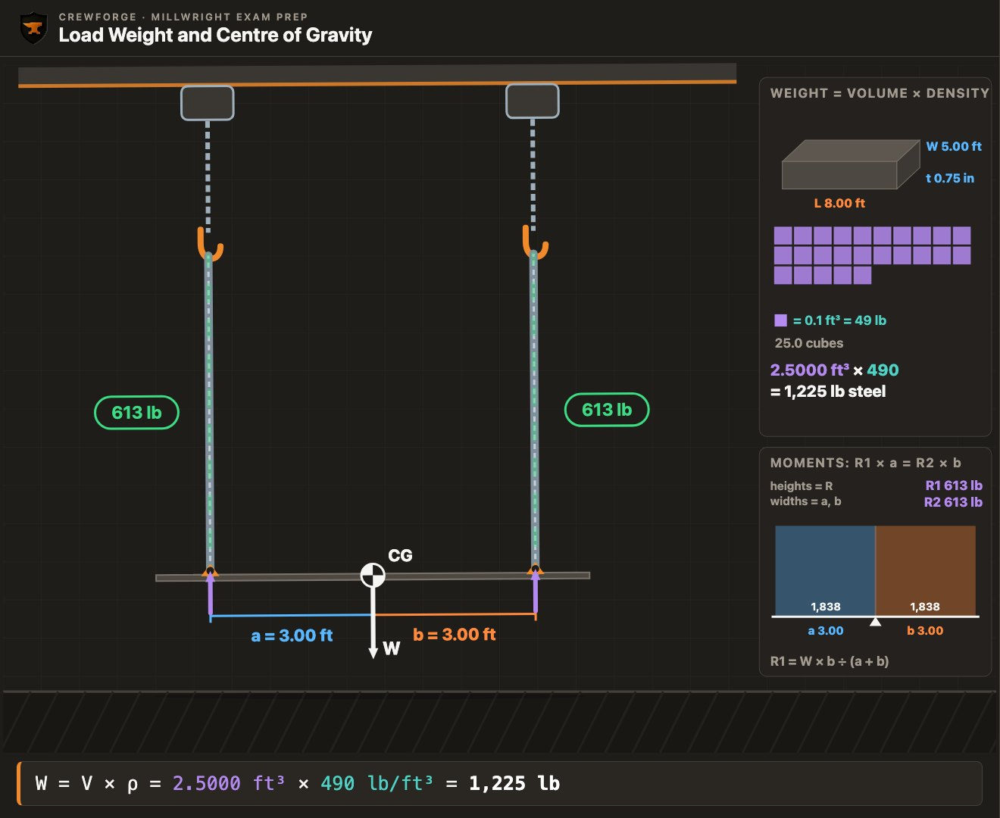
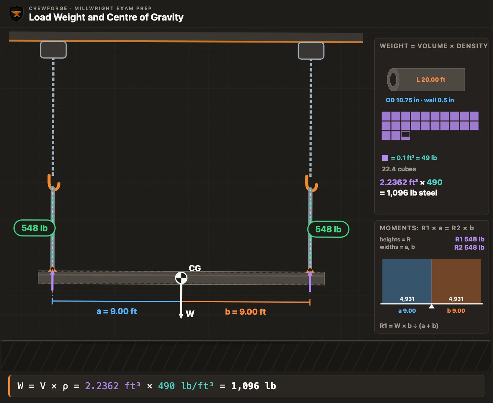
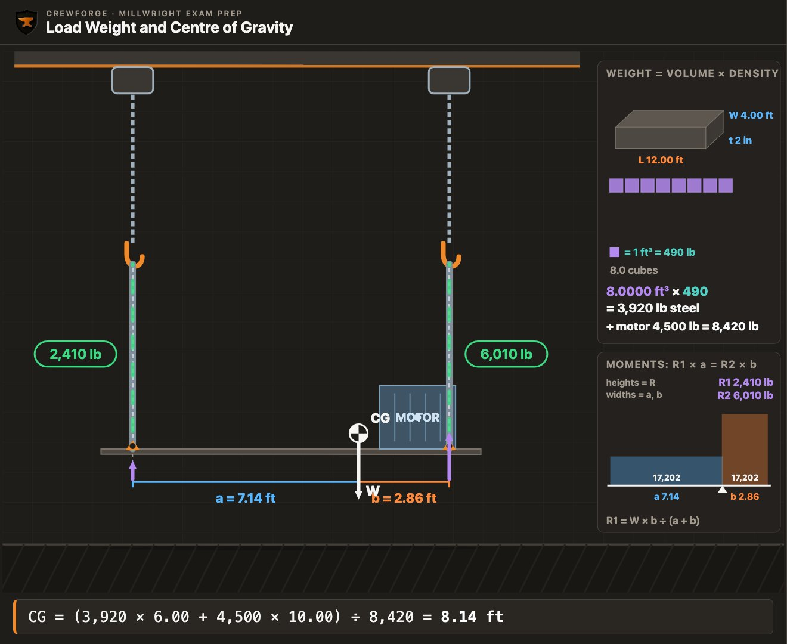
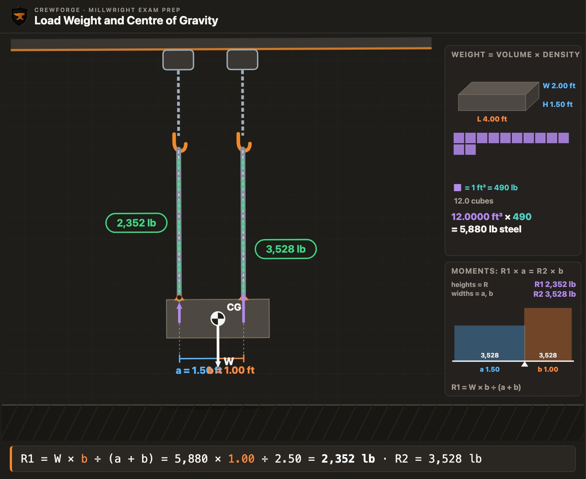
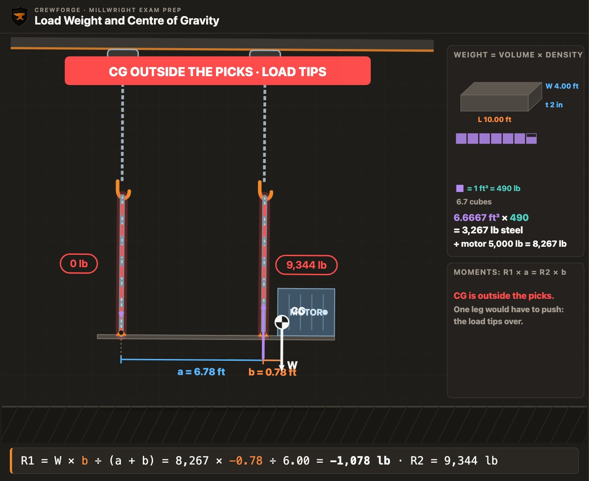
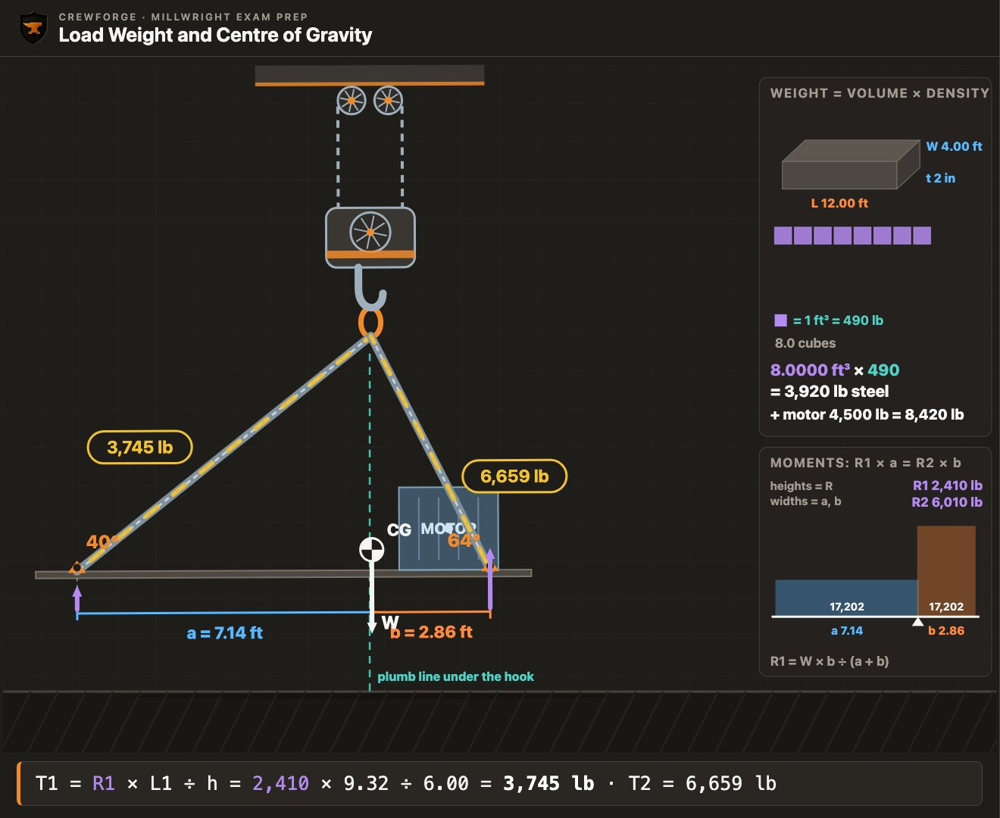
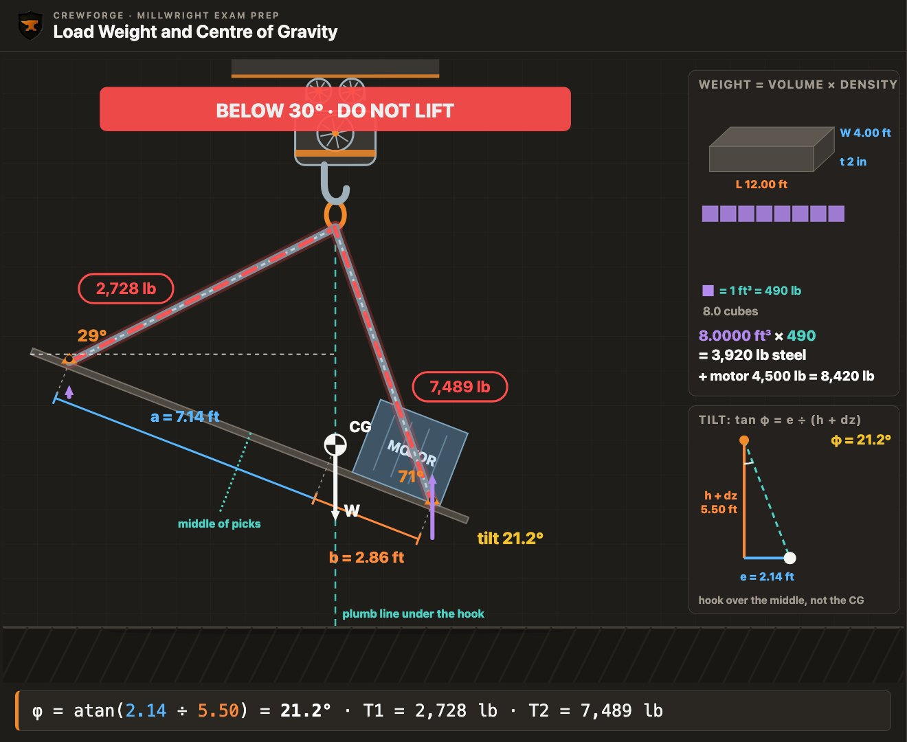

A steel skid has a heavy motor bolted near one end. Two hoists take the lugs, and the crew lifts. The end with the motor drops and the skid swings. Nothing was overloaded. The crew never found the centre of gravity.
Before you can size a sling, a shackle or a hoist, you need two numbers. How much does the load weigh? Where is its centre of gravity? This lesson shows you how to find both, and what each leg of the rig will carry once you know them. Keep a calculator handy and work each example before you open the working.
Every number here uses steel at 490 lb per cubic foot, or 7,850 kg per cubic metre. Weights are rounded to the nearest pound or kilogram, and distances to two decimals.
Watch the episode
The full episode · 14 min · AI narration
What you'll learn
- Explain why the load weight and the centre of gravity come before every other part of a lift plan, and where to find the weight.
- Calculate the weight of steel plate and blocks from their dimensions, in imperial and metric.
- Calculate the weight of round bar, pipe and structural shapes.
- Find the centre of gravity of a load made of two or more parts.
- Calculate what each vertical leg carries when the centre of gravity is not centred between the picks.
- Recognise a centre of gravity outside the pick points, and say what happens if the load is lifted.
- Calculate the tension in each leg when one hook is placed over the centre of gravity.
- Plan a lift that stays level: hook over the centre of gravity, a test lift, and the five-degree tilt rule.
Key terms
- Lift plan
- The written or spoken plan for a lift: the load's weight and centre of gravity, the rigging, the crane or hoist, the path and the people. It is agreed before the load moves.
- Load weight (W)
- The total weight the rig must hold up: every part of the load added together.
- WLL
- Working load limit: the most a sling or fitting is rated to carry, from its tag.
- Shackle
- A U-shaped steel link closed by a pin. It joins slings to a load, a lug or a hook.
- Wire rope
- Rope made of steel wires twisted into strands around a core. Wire rope slings are made from it.
- Design factor
- How many times its rated load a sling or fitting is made to hold before it breaks. A wire rope sling with a design factor of 5 breaks at about five times its rating. It is not spare capacity you can use.
- Spreader beam
- A beam hung below the hook that holds the slings apart, so the legs to the load hang near vertical.
- Lifting beam
- A beam hung from the hook with several pick points along it. It carries the load from more than one point and keeps the slings short and steep.
- Volume (V)
- How much space a part takes up, in cubic feet or cubic metres.
- Density (ρ)
- Weight per unit of volume. Steel is about 490 lb per cubic foot, or 7,850 kg per cubic metre.
- Nameplate
- The maker's plate on a machine. It often gives the weight.
- Outside diameter (OD)
- The distance across a pipe or bar, measured on the outside.
- Wall thickness
- The thickness of a pipe's wall. The inside diameter is the OD less two walls.
- Inside diameter (ID)
- The distance across the hole in a pipe: OD minus two wall thicknesses.
- W-shape
- A wide-flange steel beam. Its name gives its depth and its weight per foot, such as W12×26.
- Centre of gravity (CG)
- The point where the whole weight of the load acts.
- Moment
- A weight times its distance from a chosen point. Moments tell you where the weight balances.
- Pick point
- A place where a sling or hoist attaches to the load, such as a lug.
- Vertical share (R)
- The part of the load's weight that one leg holds up.
- Leg tension (T)
- The pull along a sling leg. An angled leg carries more than its vertical share.
- Hook height (h)
- The height of the hook above the pick points.
- Tilt
- How far the load hangs out of level, in degrees.
Two numbers before every lift
Every sling, shackle and hoist you pick is sized from these two numbers.
A lift plan starts with the load weight and the centre of gravity (CG). The weight tells you how strong the rig must be. The CG tells you where the hook must go and how the weight splits between the legs. Get either one wrong and the rest of the plan is wrong too.
Where the weight comes from
Use a weight you can trust first. The maker's nameplate, the drawings, the shipping papers or a load cell reading all give a real number. When none of these exist, you calculate the weight from the size of the part and the density of its metal. Never guess a weight.
- Nameplate or the maker's data sheet
- Drawings or a bill of materials
- Shipping papers or a weigh ticket
- A load cell or crane scale reading
- Your own calculation: volume times density
The crane or hoist also holds up the rigging. Slings, shackles, a spreader beam and the hook block all add to what it carries. Your lift plan counts them too.
Why the CG matters
A load hangs so that its CG sits straight below the hook. If the hook is not over the CG, the load turns until it is. If the CG is close to one pick point, that leg carries most of the weight. If the CG is outside the pick points, the load tips.

- Name three places to find a load's weight before you calculate it.
Answer
Any three of: the nameplate, the maker's data, the drawings, the shipping papers, a load cell.
- What happens when the hook is not over the CG?
Answer
The load turns as it lifts, until its CG is straight below the hook.
Weight from volume: plate and blocks
Most steel you lift has no weigh ticket. A tape measure and one formula give you the weight.
Weight is volume times density. For a flat plate or a block, the volume is length times width times thickness. Steel weighs about 490 lb per cubic foot. In metric, it is about 7,850 kg per cubic metre.
W = V × 490 lb/ft³ (metric: m = V × 7,850 kg/m³)
The one rule that catches people is units. Every length must be in the same unit as the density before you multiply. Plate thickness is given in inches or millimetres. Turn it into feet or metres first: divide inches by 12, and millimetres by 1,000.
A steel plate is 8 ft long, 5 ft wide and ¾ in thick. What does it weigh?
Try it first, then show the working
- Thickness in feet: 0.75 ÷ 12 = 0.0625 ft
- Volume: 8 × 5 × 0.0625 = 2.5000 ft³
- Weight: 2.5000 × 490 = 1,225 lb
Answer: 1,225 lb

A steel plate is 3 m long, 1.2 m wide and 25 mm thick. What is its mass?
Try it first, then show the working
- Thickness in metres: 25 ÷ 1,000 = 0.025 m
- Volume: 3 × 1.2 × 0.025 = 0.0900 m³
- Mass: 0.0900 × 7,850 = 707 kg
Answer: 707 kg
A steel block is 3 ft long, 2 ft wide and 1.5 ft high. What does it weigh?
Try it first, then show the working
- Volume: 3 × 2 × 1.5 = 9 ft³
- Weight: 9 × 490 = 4,410 lb
Answer: 4,410 lb
Two ways to check your answer
You can also work in inches. Steel weighs 0.2836 lb per cubic inch, which is the same density. And for plate, one inch of thickness weighs about 40.8 lb per square foot. Use either one to check a plate you have just worked out.
A plate is 48 in by 24 in by 2 in. Find its weight in cubic inches, then check it in cubic feet.
Try it first, then show the working
- In cubic inches: 48 × 24 × 2 = 2,304 in³
- 2,304 × 0.2836 = 653 lb
- In cubic feet: 4 ft × 2 ft × (2 ÷ 12) ft = 1.3333 ft³
- 1.3333 × 490 = 653 lb
Answer: 653 lb both ways
- A plate is 6 ft by 4 ft by 1 in. What is its volume?
Answer
6 × 4 × (1 ÷ 12) = 2.0000 ft³
- What does 0.05 m³ of steel weigh?
Answer
0.05 × 7,850 = 393 kg
Round bar, pipe and steel shapes
Round shapes trip people up. A pipe is a ring of steel, not a solid bar.
The end of a round bar is a circle. The area of a circle is π ÷ 4 times the diameter squared. Multiply that area by the length to get the volume.
A pipe is a ring. Find the area of the outside circle, take away the area of the hole, and the rest is steel. The hole is the inside diameter (ID): the outside diameter less two wall thicknesses, one on each side.
Pipe: A = π ÷ 4 × (OD² − ID²) V = A × L
A solid steel bar is 4 in across and 10 ft long. What does it weigh?
Try it first, then show the working
- Diameter in feet: 4 ÷ 12 = 0.3333 ft
- End area: π ÷ 4 × 0.3333² = 0.08727 ft²
- Volume: 0.08727 × 10 = 0.8727 ft³
- Weight: 0.8727 × 490 = 428 lb
Answer: 428 lb
A 20 ft length of steel pipe is 10.75 in OD with a 0.500 in wall. What does it weigh?
Try it first, then show the working
- ID: 10.75 − 2 × 0.500 = 9.75 in
- Ring area: π ÷ 4 × (10.75² − 9.75²) = 16.10 in²
- Volume: 16.10 in² × 240 in = 3,864 in³ = 2.2362 ft³
- Weight: 2.2362 × 490 = 1,096 lb
- Check: a pipe table lists this size at 54.74 lb/ft, or 1,095 lb for 20 ft
Answer: About 1,096 lb

A steel bar is 100 mm across and 3 m long. What is its mass?
Try it first, then show the working
- Diameter in metres: 0.100 m
- End area: π ÷ 4 × 0.100² = 0.007854 m²
- Volume: 0.007854 × 3 = 0.023562 m³
- Mass: 0.023562 × 7,850 = 185 kg
Answer: 185 kg
A 6 m length of steel pipe is 219.1 mm OD with an 8.18 mm wall. What is its mass?
Try it first, then show the working
- ID: 219.1 − 2 × 8.18 = 202.74 mm
- Ring area: π ÷ 4 × (219.1² − 202.74²) = 5,420 mm² = 0.005420 m²
- Volume: 0.005420 × 6 = 0.032522 m³
- Mass: 0.032522 × 7,850 = 255 kg
- Check: a pipe table lists this size at 42.55 kg/m, or 255 kg for 6 m
Answer: About 255 kg
Beams and other steel shapes
For a wide-flange beam, a W-shape, you don't need the volume. The name tells you the weight. A W12×26 is about 12 in deep and weighs 26 lb per foot. In metric, a W310×39 weighs 39 kg per metre. Multiply by the length.
| Shape | What to use | Example |
|---|---|---|
| Plate, block | V = L × W × t | 8 × 5 × 0.0625 ft = 2.5 ft³ |
| Round bar | V = π ÷ 4 × d² × L | 4 in bar, 10 ft: 0.873 ft³ |
| Pipe | V = π ÷ 4 × (OD² − ID²) × L | ID = OD − 2 × wall |
| W-shape beam | weight per foot × length | W12×26, 18 ft: 26 × 18 = 468 lb |
| Metric W-shape | kg per metre × length | W310×39, 6 m: 39 × 6 = 234 kg |
Shape weights per foot or per metre are printed in public steel and pipe tables.
- A pipe is 6.625 in OD with a 0.432 in wall. What is the ID?
Answer
6.625 − 2 × 0.432 = 5.761 in
- A W10×49 beam is 16 ft long. What does it weigh?
Answer
49 × 16 = 784 lb
Finding the centre of gravity
The CG decides where the hook goes and how much each leg carries.
For one plain part, such as a plate, a bar or a block, the CG is in the middle. When a load is made of parts, such as a skid with a motor on it, the CG moves toward the heavier part.
To find it, pick one end of the load as your zero. Multiply each part's weight by the distance from that end to the part's own CG. That product is called a moment. Add up the moments and divide by the total weight. The answer is the distance from your zero end to the CG.
x̄ = (W₁ × x₁ + W₂ × x₂ + …) ÷ W
A skid deck is 12 ft long and weighs 3,920 lb, with its CG in the middle. A 4,500 lb motor sits with its CG 10 ft from the left end. Where is the CG of the whole load?
Try it first, then show the working
- Total weight: 3,920 + 4,500 = 8,420 lb
- Deck moment: 3,920 × 6 = 23,520 lb·ft
- Motor moment: 4,500 × 10 = 45,000 lb·ft
- x̄ = (23,520 + 45,000) ÷ 8,420 = 8.14 ft from the left end
Answer: 8.14 ft from the left end

A pump base weighs 2,000 lb with its CG 5 ft from the left end. A 1,200 lb pump sits 2 ft from the left end and an 800 lb motor sits 8 ft from it. Where is the CG?
Try it first, then show the working
- Total weight: 2,000 + 1,200 + 800 = 4,000 lb
- Moments: 2,000 × 5 + 1,200 × 2 + 800 × 8 = 10,000 + 2,400 + 6,400 = 18,800 lb·ft
- x̄ = 18,800 ÷ 4,000 = 4.70 ft
Answer: 4.70 ft from the left end
A 4 m skid deck has a mass of 753.6 kg with its CG in the middle. A 1,200 kg gearbox sits 3.2 m from the left end. Where is the CG?
Try it first, then show the working
- Total: 753.6 + 1,200 = 1,953.6 kg
- Moments: 753.6 × 2 + 1,200 × 3.2 = 1,507.2 + 3,840 = 5,347.2 kg·m
- x̄ = 5,347.2 ÷ 1,953.6 = 2.74 m
Answer: 2.74 m from the left end
In the skid and motor example, a helper measures from the right end instead. What should the helper get?
Try it first, then show the working
- From the left end the CG is 8.14 ft
- From the right end: 12 − 8.14 = 3.86 ft
Answer: 3.86 ft from the right end: the same point. Either end works, as long as every distance is measured from it.
- A 1,000 lb part sits at 2 ft and a 1,000 lb part at 8 ft. Where is the CG?
Answer
(2,000 + 8,000) ÷ 2,000 = 5.00 ft: the parts are equal, so it is halfway.
- Which way does the CG move if the heavier part gets heavier?
Answer
Toward that part.
What each leg carries
When the CG is not centred between the picks, one leg carries more than half the load.
Take two vertical legs, one at each pick point. Call the distance from the left pick to the CG a, and from the CG to the right pick b. The load balances like a beam on two supports. Each leg's vertical share is the load times the distance to the other pick, divided by the distance between picks.
R2 = W × a ÷ (a + b)
Check: R1 + R2 = W
The leg nearer the CG carries more. That surprises people, so check it with the moments. About the CG, R1 × a must equal R2 × b. The short distance needs the big share to balance.
The skid and motor above weigh 8,420 lb with the CG 8.14 ft from the left end. Two vertical hoists take lugs 1 ft in from each end. What does each hoist carry?
Try it first, then show the working
- Picks: 1 ft and 11 ft from the left end, so a + b = 10 ft
- a = 8.138 − 1 = 7.138 ft; b = 11 − 8.138 = 2.862 ft
- Left: 8,420 × 2.862 ÷ 10 = 2,410 lb
- Right: 8,420 × 7.138 ÷ 10 = 6,010 lb
- Check: 2,410 + 6,010 = 8,420 lb
Answer: Left 2,410 lb, right 6,010 lb
A steel block is 4 ft × 2 ft × 1.5 ft and weighs 5,880 lb. Its CG is in the middle. The left lug is 0.5 ft in from the left end; the right lug is 1 ft in from the right end. What does each leg carry?
Try it first, then show the working
- Picks at 0.5 ft and 3 ft from the left end; CG at 2 ft
- a = 2 − 0.5 = 1.5 ft; b = 3 − 2 = 1 ft; a + b = 2.5 ft
- Left: 5,880 × 1 ÷ 2.5 = 2,352 lb
- Right: 5,880 × 1.5 ÷ 2.5 = 3,528 lb
Answer: Left 2,352 lb, right 3,528 lb. The right lug is nearer the CG, so it carries more.

A plate is 3 m × 1.5 m × 30 mm and has a mass of 1,060 kg. The left lug is 0.2 m in from the left end; the right lug is 0.6 m in from the right end. What does each leg carry?
Try it first, then show the working
- Picks at 0.2 m and 2.4 m; CG at 1.5 m
- a = 1.3 m; b = 0.9 m; a + b = 2.2 m
- Left: 1,059.75 × 0.9 ÷ 2.2 = 434 kg
- Right: 1,059.75 × 1.3 ÷ 2.2 = 626 kg
Answer: Left 434 kg, right 626 kg
- A 6,000 lb load hangs on two vertical legs. a = 2 ft and b = 4 ft. What does the left leg carry?
Answer
6,000 × 4 ÷ 6 = 4,000 lb
- Which leg carries more: the one nearer the CG or the one further away?
Answer
The one nearer the CG.
When the CG is outside the picks
A hoist, a sling or a chain can only pull. It can never push down.
Work the shares for a load whose CG is outside the picks and one share comes out negative. A negative share means that leg would have to push down to hold the load level. No leg can push, so that end rises and the load turns over the other pick.
A 10 ft skid deck weighs 3,267 lb. A 5,000 lb motor sits with its CG 9.6 ft from the left end. The lugs are 1 ft in from the left end and 3 ft in from the right end. Can two vertical hoists lift it level?
Try it first, then show the working
- Total: 3,267 + 5,000 = 8,267 lb
- x̄ = (3,267 × 5 + 5,000 × 9.6) ÷ 8,267 = 7.78 ft
- The right lug is at 10 − 3 = 7 ft. The CG is 0.78 ft past it
- Left share: 8,267 × (7 − 7.78) ÷ 6 = −1,078 lb
Answer: No. The left share is negative (−1,078 lb): that hoist would have to push down. The skid tips.

Keep the CG between the picks, and below them
Choose pick points on both sides of the CG, and above it. A hanging load always swings until its CG is straight below the point that holds it. With the picks above the CG, the CG is already hanging below them, so the load stays steady. With the CG above the picks, the CG can only get lower by rolling the load over.
Think of a tall cabinet lifted by lugs at its base. Even with the CG between the lugs, the heavy top wants to fall sideways. The SkilledTradesBC rigging guide (B-4.1) says it plainly: never rig a load with the CG above the lifting points. Where the CG sits up and down works like it does along the length: it is nearer the heavy parts. If you can't pick above the CG, use more legs or a lifting beam, and get the lift checked.
- A share works out to −500 lb. What does that tell you?
Answer
The CG is outside the picks. That leg would have to push, so the load will tip.
- Name one way to fix a load whose CG is outside its picks.
Answer
Move a pick point past the CG, or add a leg on the heavy side.
One hook: put it over the CG
Most lifts use one hook and two slings. The hook position decides whether the load hangs level.
With one hook, the load hangs level only when the hook is straight above the CG. The vertical shares are the same as for two vertical hoists. But now the legs lean in to the hook, so each leg carries more than its vertical share.
Each leg makes a right-angled triangle. The height is h, the hook height above the picks. The base is the leg's distance across to the CG, a or b. The long side is the leg length L. The leg tension is its vertical share times L ÷ h.
T1 = R1 × L1 ÷ h T2 = R2 × L2 ÷ h
The skid and motor above (8,420 lb, CG 8.14 ft from the left end, lugs 1 ft in from each end) hang from one hook over the CG, 6 ft above the lugs. Find the tension in each leg.
Try it first, then show the working
- Shares, as before: R1 = 2,410 lb, R2 = 6,010 lb
- Left leg: L1 = √(7.138² + 6²) = 9.325 ft
- T1 = 2,410 × 9.325 ÷ 6 = 3,745 lb
- Right leg: L2 = √(2.862² + 6²) = 6.648 ft
- T2 = 6,010 × 6.648 ÷ 6 = 6,659 lb
Answer: Left 3,745 lb, right 6,659 lb. Size the slings for 6,659 lb.

A 1,600 kg frame hangs level from one hook over its centre. The lugs are 1.2 m each side of the CG, and the hook is 1.6 m above them. Find the tension in each leg.
Try it first, then show the working
- Each share: 1,600 ÷ 2 = 800 kg
- L = √(1.2² + 1.6²) = 2.0 m
- T = 800 × 2.0 ÷ 1.6 = 1,000 kg
Answer: 1,000 kg in each leg
If the hook is not over the CG
Hang a load from two equal slings with the CG off centre and the hook ends up over the middle of the picks, not over the CG. As the load leaves the floor it turns until its CG is under the hook. It hangs tilted, and the low-side leg takes extra load.

A tilted load won't land flat, and it can shift in the slings. The tilt also tells you the hook is not over the CG, so one leg is carrying more than you planned. The SkilledTradesBC rigging guide (B-4.1 and B-4.6) sets the limit: if a load's tilt is more than 5° as it leaves the floor, land it and re-rig.
- In a level lift, which is larger: a leg's tension or its vertical share?
Answer
Its tension. L ÷ h is always more than 1 for an angled leg.
- A load tilts 8° as it leaves the floor. What do you do?
Answer
Land it and re-rig. Over 5° of tilt, don't carry on.
Putting it together: a level lift
On the job these steps come in one order, and each one needs the one before it.
Here is the order a millwright works through. Your site's lift plan and procedures come first; this is the thinking behind them.
- Find the weight: nameplate, drawings or papers, or calculate it.
- Find the CG: the drawings, or moments from one end for a load made of parts. If you can't, estimate it.
- Choose pick points on both sides of the CG, and above it when you can.
- Work out each leg's vertical share from the distances.
- Place the hook over the CG and work out each leg's tension.
- Choose slings and hardware rated for the heavier leg.
- Lift a few inches, check the tilt, and land and re-rig if it is over 5°.
When nobody knows where a machine's CG is, estimate it from where its heavy parts sit and put the hook over your estimate. Then make a short trial lift: raise it a few inches and watch. The load swings until its CG is under the hook, so the way it tilts shows you which way to move the hook. The SkilledTradesBC rigging guide (B-4.1) describes this: careful judgment and short trial lifts. Complex or critical lifts go to a competent, certified rigger.
A steel base plate is 2.4 m × 1.0 m × 25 mm. A 900 kg pump sits on it with its CG 0.7 m from the left end. Lugs are 0.2 m in from each end. The hook will be over the CG, 1.5 m above the lugs. The two slings and the shackle weigh about 15 kg. You have slings rated 1,000 kg. Will they do?
Try it first, then show the working
- Plate: 2.4 × 1.0 × 0.025 = 0.06 m³ × 7,850 = 471 kg. Total 1,371 kg
- Hoist load: 1,371 kg of load + 15 kg of rigging = 1,386 kg
- CG: (471 × 1.2 + 900 × 0.7) ÷ 1,371 = 0.872 m from the left end
- a = 0.672 m, b = 1.328 m; R1 = 911 kg, R2 = 461 kg
- L1 = √(0.672² + 1.5²) = 1.644 m; T1 = 911 × 1.644 ÷ 1.5 = 998 kg
- L2 = 2.004 m; T2 = 615 kg
Answer: Only just. The left leg carries 998 kg on a 1,000 kg sling, and the hoist carries 1,386 kg with the rigging. The rating is a limit, not a target: a small error in the weight or the CG would put that leg over. Raise the hook or use stronger slings.
Key formulas
| Weight | W = V × 490 lb/ft³ (7,850 kg/m³) |
| Plate, block | V = L × W × t (all in ft or m) |
| Round bar | V = π ÷ 4 × d² × L |
| Pipe | V = π ÷ 4 × (OD² − ID²) × L; ID = OD − 2 × wall |
| W-shape | weight per foot (kg per metre) × length |
| Centre of gravity | x̄ = Σ(W × x) ÷ W, every x from the same end |
| Vertical shares | R1 = W × b ÷ (a + b); R2 = W × a ÷ (a + b) |
| Leg tension, hook over CG | T = R × L ÷ h; L = √(a² + h²) |
| Tilt rule | over 5°: land it and re-rig |
Where people lose marks
- Multiplying with the thickness still in inches or millimetres. Turn every length into feet or metres first. Inches ÷ 12; millimetres ÷ 1,000.
- Taking the pipe wall off once, or weighing a pipe as a solid bar. ID = OD − 2 × wall. The steel is the ring only.
- Putting the CG halfway between two parts. Use the moments. The CG sits closer to the heavier part.
- Measuring some distances from one end and some from the other. Pick one end as zero and measure every distance from it.
- Giving each leg half the load when the CG is not centred. Each leg's share is W times the distance to the other pick, over the pick spacing.
- Thinking the leg further from the CG carries more. The leg nearer the CG carries more.
- Forgetting that an angled leg carries more than its vertical share. Multiply the share by L ÷ h.
- Lifting a load whose CG is outside the picks. A negative share means it will tip. Re-rig first.
Simulator challenge
Open the simulator: a 12 ft skid with a 4,500 lb motor 10 ft from the left end. Find where the hook must go for a level lift, then see what happens to the legs if the hook stays over the middle.
Practice quiz
8 exam-style questions. Pick an answer to see the worked solution and the simulator set up exactly as the question describes.
Practice problems
Show your working on paper, then check it.
A steel plate is 6 ft × 3 ft × 1½ in. What does it weigh?
Show the working
- V = 6 × 3 × (1.5 ÷ 12) = 2.2500 ft³
- W = 2.2500 × 490 = 1,103 lb
Answer: 1,103 lb
A steel plate is 2.5 m × 1.25 m × 12 mm. What is its mass?
Show the working
- V = 2.5 × 1.25 × 0.012 = 0.0375 m³
- m = 0.0375 × 7,850 = 294 kg
Answer: 294 kg
A solid steel bar is 8 in across and 6 ft long. What does it weigh?
Show the working
- A = π ÷ 4 × (8 ÷ 12)² = 0.3491 ft²
- V = 0.3491 × 6 = 2.0944 ft³
- W = 2.0944 × 490 = 1,026 lb
Answer: 1,026 lb
A 20 ft pipe is 12.75 in OD with a 0.375 in wall. About what does it weigh?
Show the working
- ID = 12.75 − 0.75 = 12.00 in
- A = π ÷ 4 × (12.75² − 12²) = 14.58 in²
- V = 14.58 × 240 ÷ 1,728 = 2.0249 ft³
- W = 2.0249 × 490 = 992 lb (table: 49.56 lb/ft × 20 = 991 lb)
Answer: About 992 lb
An 8 ft base weighs 1,500 lb with its CG at the middle. A 2,500 lb gearbox sits 6.5 ft from the left end. Where is the CG?
Show the working
- W = 4,000 lb
- Moments: 1,500 × 4 + 2,500 × 6.5 = 6,000 + 16,250 = 22,250 lb·ft
- x̄ = 22,250 ÷ 4,000 = 5.56 ft
Answer: 5.56 ft from the left end
The drawing shows a 6,000 lb load on two vertical legs 9 ft apart. Its CG is 3.5 ft from the left leg. What does each leg carry?
Show the working
- a = 3.5 ft, b = 5.5 ft
- Left: 6,000 × 5.5 ÷ 9 = 3,667 lb
- Right: 6,000 × 3.5 ÷ 9 = 2,333 lb
Answer: Left 3,667 lb, right 2,333 lb
A 2,000 kg load hangs from one hook over its CG. The CG is 0.8 m from the left lug and 1.2 m from the right lug. The hook is 1.5 m above the lugs. Find the tension in each leg.
Show the working
- R1 = 2,000 × 1.2 ÷ 2.0 = 1,200 kg; R2 = 800 kg
- L1 = √(0.8² + 1.5²) = 1.70 m; T1 = 1,200 × 1.70 ÷ 1.5 = 1,360 kg
- L2 = √(1.2² + 1.5²) = 1.92 m; T2 = 800 × 1.92 ÷ 1.5 = 1,024 kg
Answer: Left 1,360 kg, right 1,024 kg
The drawing of a 4,000 lb load shows its picks 6 ft apart. Its CG is 0.5 ft beyond the right pick. What does the left share work out to, and what does it mean?
Show the working
- a = 6.5 ft, b = −0.5 ft
- Left share: 4,000 × (−0.5) ÷ 6 = −333 lb
Answer: −333 lb. A negative share: the left leg would have to push, so the load tips.
Printable textbook chapter
MW-004 · Load Weight and Centre of Gravity
This whole lesson as a printable chapter, formatted to be light on toner: every explanation, diagram and worked example, the key formulas, common mistakes, practice questions with full answers at the back, and sources. Every lesson in the program comes with one, and each level's chapters build into a full CrewForge textbook.
These are 4 lessons. The full Level 1 has 40.
Every Level 1 lesson comes like these, plus scored simulator challenges, unit tests, a timed level exam, progress tracking and a certificate of completion. Early access members also watch new episodes before they're on YouTube, with no ads.
Canadian dollars, before tax.
Sources
- Red Seal Occupational Standard (RSOS), Industrial Mechanic (Millwright), Task B-9 Plans rigging, hoisting/lifting and moving (red-seal.ca/eng/trades/industrialmech/mwa-b.shtml)
- Iowa DOT Materials IM 569, Computing Structural Steel Weight: steel 490 lb/ft³ (ia.iowadot.gov/erl/current/IM/content/569.htm)
- Engineering ToolBox, Metals and Alloys – Densities: steel 7,850 kg/m³ (engineeringtoolbox.com/metal-alloys-densities-d_50.html); Steel Plate Weight: W = 40.8 lb/ft² per inch of thickness (engineeringtoolbox.com/steel-plates-weight-d_1561.html)
- CCOHS, OSH Answers, Materials Handling – Rigging or Sling Hitches: position the hook over the centre of gravity of the load (ccohs.ca/oshanswers/safety_haz/materials_handling/hitches.html)
- SkilledTradesBC / TRU Open Press, Block B: Tools and Equipment, B-4.1 and B-4.6 (CC BY-NC-SA 4.0): the CG moves under the hook; more than 5° of tilt, lower the load and re-rig; include all slings, spreaders, other lifting equipment and the hook block in the load weight (b-handmeasuringtools-bcplumbingapprl1.pressbooks.tru.ca)
- IHSA (Ontario), Construction Health and Safety Manual, Chapter 24 Rigging: load weight known, hook directly above the load's centre of gravity (ihsa.ca/rtf/health_safety_manual/pdfs/equipment/Rigging.pdf)
- Public pipe tables of ASME B36.10 dimensions and weights per foot, clause text not reproduced (NPS 8 STD 8.625 in OD, 0.322 in wall, 219.1 mm, 8.18 mm; NPS 10 XS 10.75 in, 0.500 in; NPS 12 STD 12.75 in, 0.375 in): engineeringtoolbox.com/steel-pipes-dimensions-d_43.html
- W-shape designation: W, then nominal depth in inches and weight in lb per foot (EngineerExcel, W-Beams, engineerexcel.com/w-beam-dimensions; W12×26 is 12.22 in deep)
- Wire rope sling design factor 5 : 1 (ASME B30.9 by topic, clause not reproduced; Kennedy Wire Rope & Sling, Capacities and Hitches (PDF p. 1); Unirope, Use and Care of Wire Rope Slings p. 5)
- Every worked example checked against the CrewForge rigging simulator's calc() (Weight & CG mode)
Exam preparation, not a procedure. Always check the sling tag, the manufacturer's charts and your lift plan.